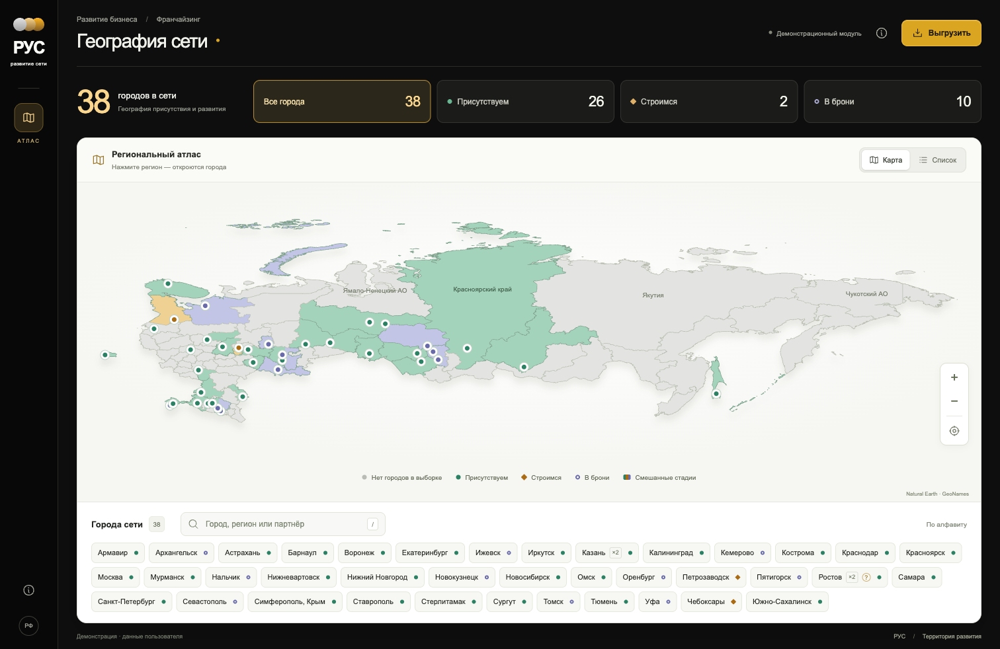
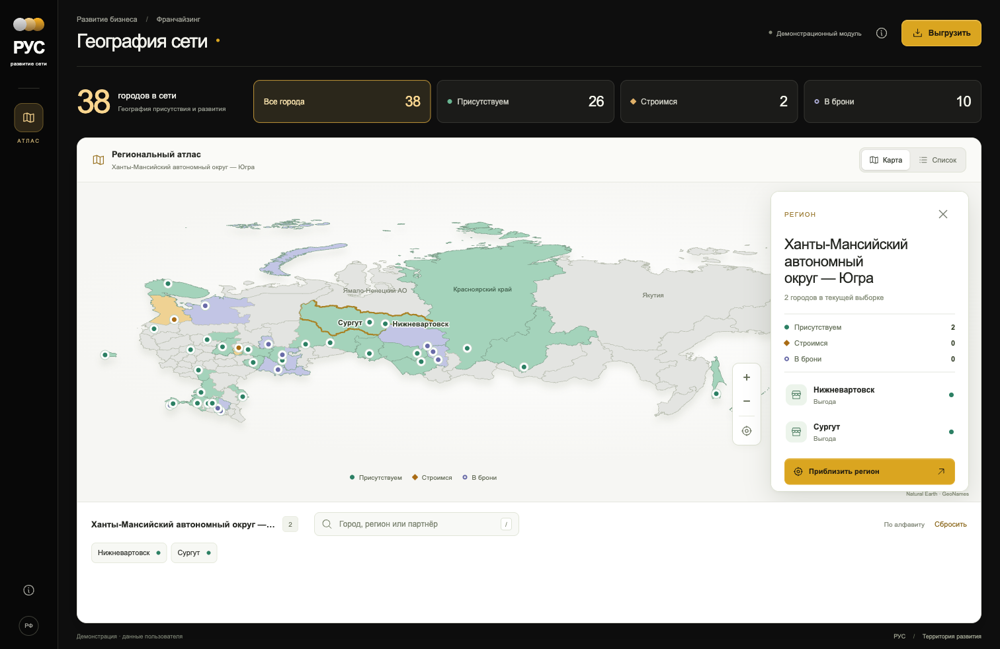
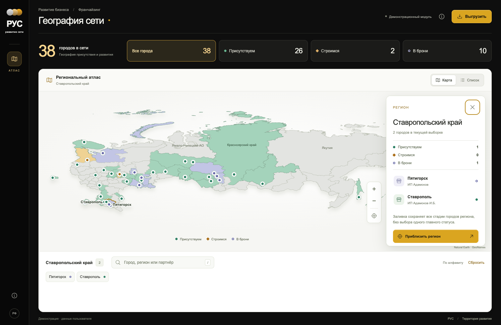
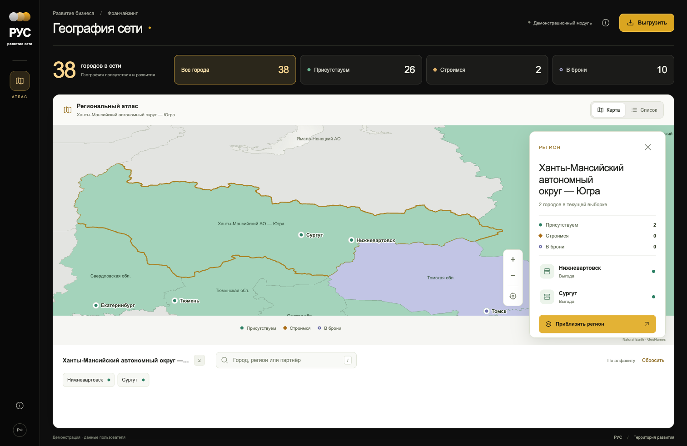
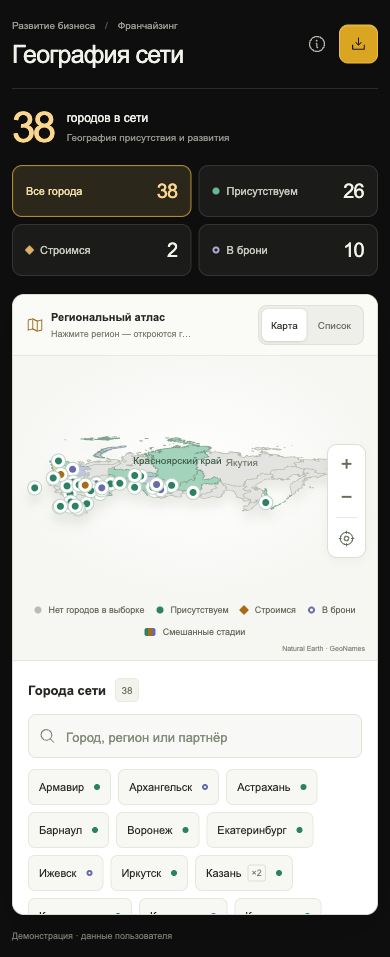
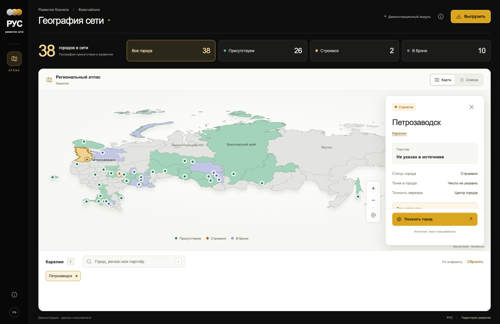

Problem
A flat location list did not show geographic concentration, regional coverage, or the relationship between city records and expansion stages.
A responsive geographic interface for searching locations, filtering stages, inspecting regional coverage, and opening clear city-level context.
A flat location list did not show geographic concentration, regional coverage, or the relationship between city records and expansion stages.
Combine region geometry, city cards, semantic status colors, direct search, zoom controls, keyboard escape behavior, and explicit mobile layouts.






The standalone map passed build and browser scenarios for navigation, search, filters, zoom, deep links, and mobile layouts. Public API, company authentication, and production ERP integration remain outside this case.